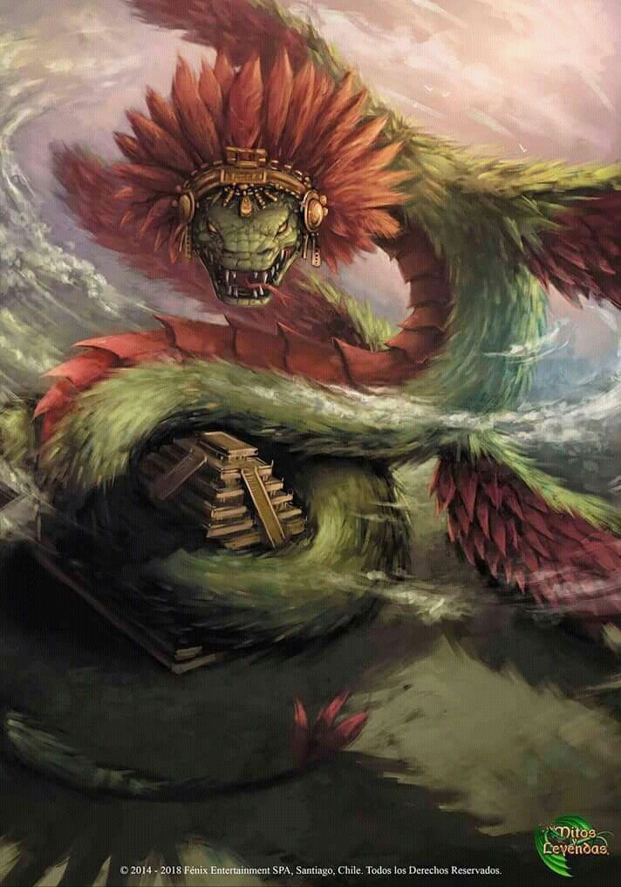

La mitología maya es un conjunto de creencias, mitos, leyendas y rituales que formaban parte de la religión y la cultura de la civilización maya en Mesoamérica. La mitología maya estaba profundamente arraigada en su cosmovisión y su relación con el mundo natural, y abarcaba una amplia gama de temas que iban desde el origen del universo hasta la vida cotidiana y las prácticas rituales.
En la mitología maya, los dioses y diosas jugaban un papel fundamental en la creación y el mantenimiento del mundo. Algunos de los dioses más importantes incluían a Itzamná, el dios del cielo y la sabiduría; Kukulkán (también conocido como Quetzalcóatl en la mitología azteca), la serpiente emplumada asociada con el viento y el conocimiento; Ixchel, la diosa de la luna, la fertilidad y la medicina; y Chaac, el dios de la lluvia.

Además de los dioses, la mitología maya estaba poblada de seres sobrenaturales, héroes legendarios y criaturas míticas, cada uno con su propia historia y significado. Los mitos mayas también incluían relatos sobre la creación del mundo, la vida después de la muerte, el ciclo del tiempo y las prácticas rituales asociadas con la agricultura, la caza y otros aspectos de la vida cotidiana.
Los mitos y la religión mayas estaban estrechamente entrelazados con todas las facetas de la vida de la civilización maya, desde la arquitectura de sus ciudades hasta sus sistemas políticos y económicos. Aunque muchas de estas creencias y prácticas se perdieron con la llegada de los conquistadores españoles en el siglo XVI, algunas tradiciones y relatos mitológicos han perdurado y continúan siendo importantes para las comunidades mayas contemporáneas y para el estudio de la cultura maya en general.